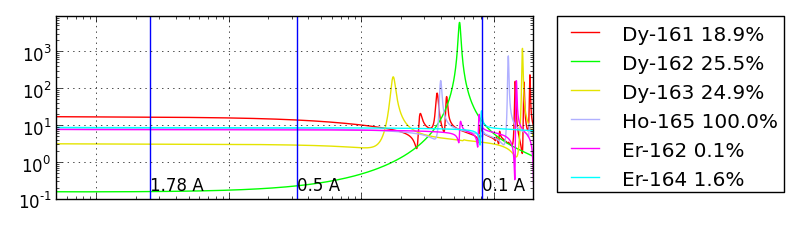
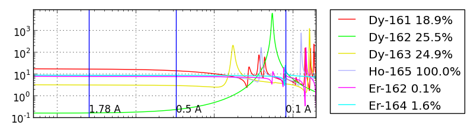
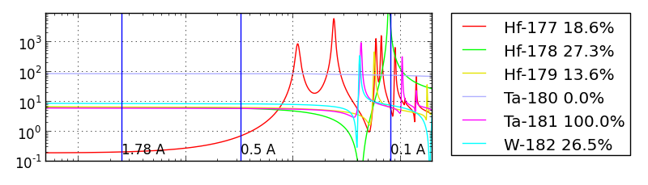
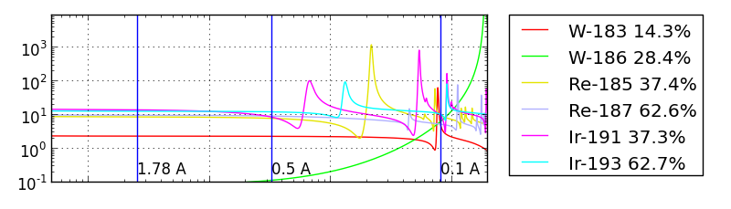
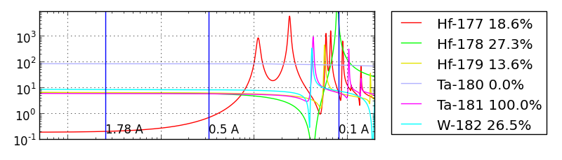
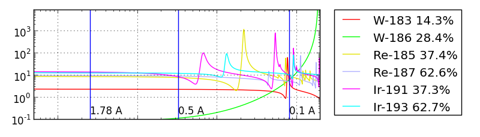
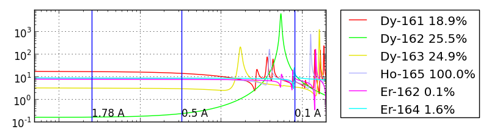
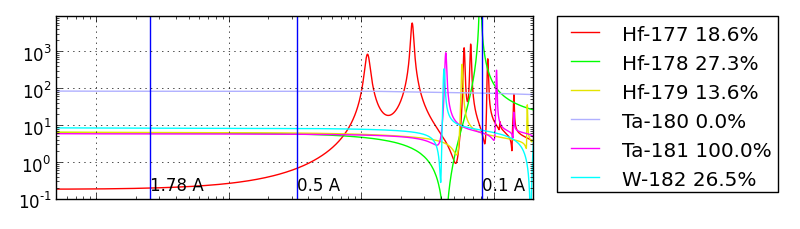
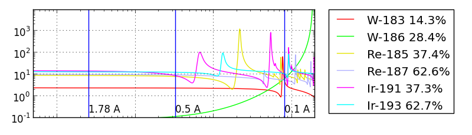

Elastic scattering cross section (barns) calculated from the resonances in the ENDF/B VII.1 database. Percentages indicate natural abundance.


 

 




The isotopes listed in this table all have resonance effects in the thermal neutron range. Other isotopes either have no natural abundance (e.g., 22Na), or the first peak occurs at a wavelength below 0.1 Å.
The wavelength listed is the first wavelength where the resonance effect become visible in the coherent scattering cross section, not the center of resonance peak. If your incident neutron wavelength is above this wavelength for all elements in your material, then you should be able to use the online scattering calculators for your material. The exception is the half dozen isotopes in which the first resonance is above 1.78 Å. Since the online scattering calculator uses neutron cross sections tabulated at 1.78 Å you can expect a measured cross section somewhat lower than the calculated cross section, depending on what percentage of your material is composed of these isotopes.
For energies above the first resonance effect, the change in SLD can be dramatic. See charts below for the total elastic cross sections as a function of neutron energy.
Elastic scattering cross section (barns) calculated from the resonances in the ENDF/B VII.1 database. Percentages indicate natural abundance.



| Start of first resonance | |||
|---|---|---|---|
| Isotope | Abundance (%) | Wavelength (Å) | Energy (meV) |
| Gd-155 | 14.800 | 6.44 | 1.97 |
| Gd-157 | 15.650 | 6.18 | 2.14 |
| Sm-149 | 13.820 | 6.02 | 2.26 |
| Cd-113 | 12.220 | 5.44 | 2.77 |
| Hf-177 | 18.600 | 4.03 | 5.04 |
| Sm-152 | 26.750 | 2.74 | 10.93 |
| Te-123 | 0.890 | 2.66 | 11.55 |
| Dy-162 | 25.510 | 1.80 | 25.30 |
| Lu-176 | 2.590 | 1.38 | 42.65 |
| Pa-231 | 100.000 | 0.83 | 118.44 |
| Eu-151 | 47.810 | 0.75 | 145.40 |
| Ir-191 | 37.300 | 0.63 | 206.11 |
| U-235 | 0.720 | 0.56 | 262.29 |
| Er-167 | 22.930 | 0.51 | 319.97 |
| Ir-193 | 62.700 | 0.42 | 459.49 |
| In-115 | 95.710 | 0.38 | 570.23 |
| Dy-163 | 24.900 | 0.28 | 1068.63 |
| Rh-103 | 100.000 | 0.28 | 1067.26 |
| Re-185 | 37.400 | 0.26 | 1234.61 |
| Dy-160 | 2.340 | 0.26 | 1230.06 |
| Ta-180 | 0.012 | 0.26 | 1195.41 |
| In-113 | 4.290 | 0.25 | 1351.88 |
| W-186 | 28.430 | 0.25 | 1332.08 |
| Eu-153 | 52.190 | 0.25 | 1315.69 |
| Xe-124 | 0.090 | 0.24 | 1478.69 |
| Dy-156 | 0.060 | 0.23 | 1582.86 |
| La-138 | 0.090 | 0.21 | 1908.00 |
| Lu-175 | 97.410 | 0.21 | 1902.60 |
| Dy-161 | 18.910 | 0.21 | 1845.16 |
| Tb-159 | 100.000 | 0.19 | 2385.21 |
| W-182 | 26.500 | 0.19 | 2191.03 |
| Sr-87 | 7.000 | 0.18 | 2471.90 |
| Xe-131 | 21.180 | 0.18 | 2442.61 |
| Tm-169 | 100.000 | 0.17 | 3004.26 |
| Sm-147 | 14.990 | 0.17 | 3002.05 |
| Ho-165 | 100.000 | 0.17 | 2699.16 |
| Au-197 | 100.000 | 0.16 | 3228.44 |
| Ag-109 | 48.161 | 0.16 | 3089.88 |
| U-234 | 0.005 | 0.16 | 3016.30 |
| Hf-174 | 0.160 | 0.15 | 3806.76 |
| Nd-145 | 8.300 | 0.15 | 3704.10 |
| Ta-181 | 99.988 | 0.15 | 3667.05 |
| Re-187 | 62.600 | 0.15 | 3515.05 |
| Hf-178 | 27.280 | 0.14 | 4286.98 |
| Hf-179 | 13.620 | 0.13 | 5173.77 |
| U-238 | 99.275 | 0.13 | 4954.08 |
| Cs-133 | 100.000 | 0.13 | 4785.02 |
| Er-162 | 0.140 | 0.13 | 4526.80 |
| Sb-121 | 57.210 | 0.12 | 5352.75 |
| W-183 | 14.310 | 0.11 | 7248.45 |
| Hf-176 | 5.260 | 0.11 | 6767.69 |
| Er-164 | 1.610 | 0.11 | 6582.75 |